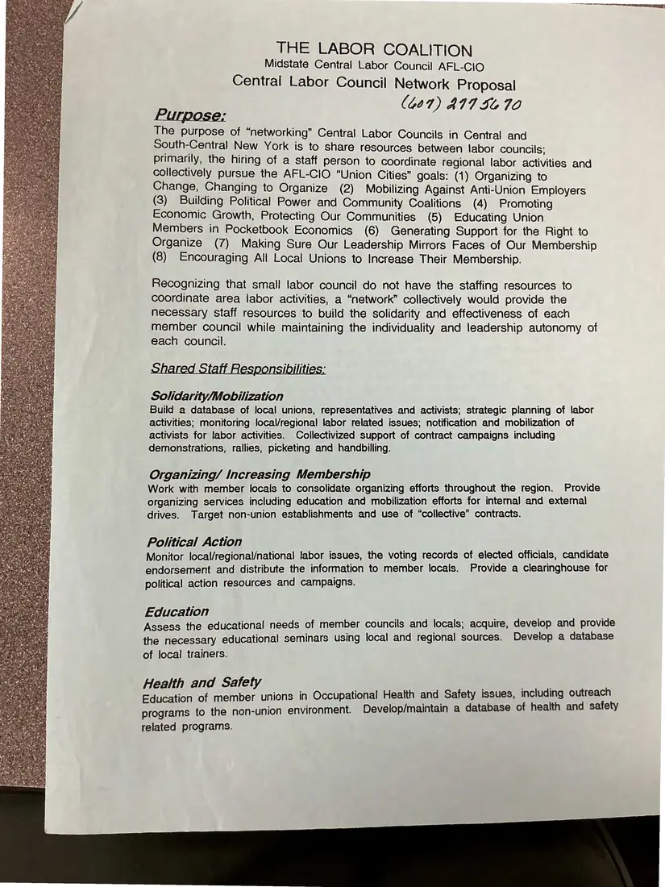
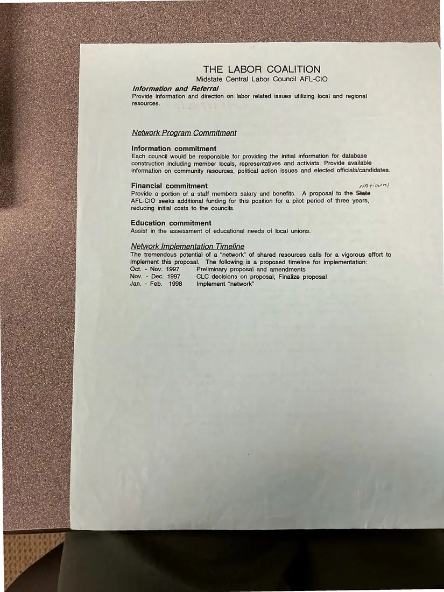

Proposal, 2 pages
“Central Labor Council Network Proposal” (blue copy)
[Fall 1997]Date inferred
The Labor Coalition proposes that small central labor councils in Central and South-Central New York share staff to pursue the AFL-CIO Union Cities goals. It sets out shared responsibilities (solidarity, organizing, political action, education, health and safety), commitments from each council, and a timeline from October 1997 to February 1998.
Download or cite this itemPages


(open zoom view)Read the page text (machine-read, mostly readable)
This text was generated automatically from the photograph and has not been corrected. The image is the authoritative record.
THE LABOR COALITION Midstate Central Labor Council AFL-CIO Central Labor Council Network Proposal (667) AIT S670 Purpose: Y The purpose of “networking” Central Labor Councils in Central and ah South-Central New York is to share resources between labor councils: é primarily, the hiring of a staff person to coordinate regional labor activities and : *: collectively pursue the AFL-CIO “Union Cities” goals: (1) Organizing to f es Change, Changing to Organize (2) Mobilizing Against Anti-Union Employers 2 Sa (3) Building Political Power and Community Coalitions (4) Promoting - Economic Growth, Protecting Our Communities (5) Educating Union es Members in Pocketbook Economics (6) Generating Support for the Right to Organize (7) Making Sure Our Leadership Mirrors Faces of Our Membership ef ce (8) Encouraging All Local Unions to Increase Their Membership. re : Recognizing that small labor council do not have the staffing resources to a coordinate area labor activities, a “network” collectively would provide the necessary staff resources to build the solidarity and effectiveness of each member council while maintaining the individuality and leadership autonomy of each council. Shared Staff R bilities: Solidarity/Mobilization Build a database of local unions, representatives and activists; strategic planning of labor : activities; monitoring local/regional labor related issues; notification and mobilization of on activists for labor activities. Collectivized support of contract campaigns including demonstrations, rallies, picketing and handbilling. aye Organizing/ Increasing Membership Work with member locals to consolidate organizing efforts throughout the region. Provide organizing services including education and mobilization efforts for internal and extemal drives. Target non-union establishments and use of “collective” contracts. Political Action Monitor local/regional/national labor issues, the voting records of elected officials, candidate endorsement and distribute the information to member locals. Provide a clearinghouse for political action resources and campaigns. . Education Assess the educational needs of member councils and locals; acquire, develop and provide the necessary educational seminars using local and regional sources. Develop a database is of local trainers. Health and Safety Education of member unions in Occupational Health and Safety issues, including outreach programs to the non-union environment. Develop/maintain a database of health and safety ae related programs.


(open zoom view)Read the page text (machine-read, mostly readable)
This text was generated automatically from the photograph and has not been corrected. The image is the authoritative record.
THE LABOR COALITION Midstate Central Labor Council AFL-CIO Information and Referral Provide information and direction on labor related issues utilizing local and regional resources. Information commitment Each council would be responsible for providing the initial information for database construction including member locals, representatives and activists. Provide available information on community resources, political action issues and elected officials/candidates. Financial commitment NA for] Provide a portion of a staff members salary and benefits. A proposal to the State AFL-CIO seeks additional funding for this position for a pilot period of three years, reducing initial costs to the councils. Education commitment Assist in the assessment of educational needs of local unions. NehCre ina ‘ation Timeli The tremendous potential of a “network” of shared resources calls for a vigorous effort to implement this proposal. The following is a proposed timeline for implementation: Oct. - Nov. 1997 Preliminary proposal and amendments Nov. - Dec. 1997 CLC decisions on proposal; Finalize proposal Jan. - Feb. 1998 Implement “network”
See something wrong, or recognize a person or event? Send a correction. If you hold rights in this item or think it should not be public, write to the same address.